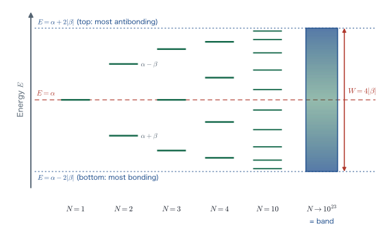
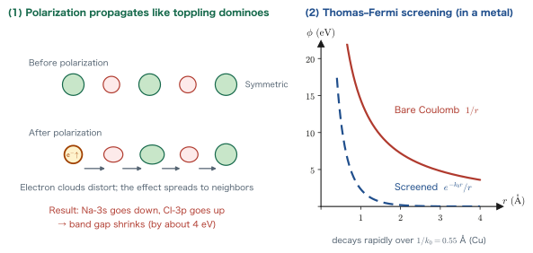
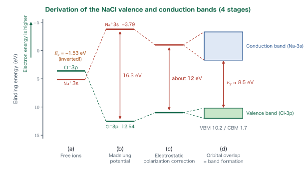
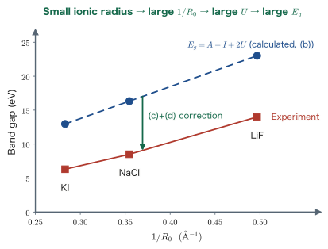

Chapter 14Electronic States in Ionic Crystals
In the previous chapter, we regarded an ionic crystal as “a collection of point charges” and computed its electrostatic energy using the Madelung constant. There, electrons appeared only as spheres rounded off around the nuclei, and we did not address the question “which electron sits at which energy level?” In this chapter we take this last step. That is, using NaCl as our example, we follow quantitatively how the electronic states of an ionic crystal—the valence band, the conduction band, and the band gap—are determined by a succession of physical factors.
At the heart of this chapter is one simple question. The outermost shell of Na is 3s and that of Cl is 3p; for the same principal quantum number, an $s$ orbital should lie lower than a $p$ orbital. What is more, when we line up the measured values for the free ions, the 3s level of Na$^+$ is lower than the 3p level of Cl$^-$. Nevertheless, in the actual NaCl crystal, Cl-3p forms the valence band (lower) and Na-3s forms the conduction band (upper). Why is the order reversed? The answer lies in the Madelung potential itself, which we computed in Chapter 13. In this chapter we stack up four stages in turn—(a) free ions → (b) the Madelung potential → (c) electrostatic polarization → (d) orbital overlap—and verify, entirely with equations, the path that starts from $-1.5$ eV and arrives at the experimental value of $8.5$ eV.
This chapter is also the final chapter of this book. In the last section, we take the question posed in Chapter 1—“what kind of properties emerge when which elements are arranged in which way?”—summarize what we can now say about it after the preceding 14 chapters, and indicate what to study next.
- That arranging $N$ atoms gives $N$ solutions of the secular equation of Chapter 11, which become nearly continuous as $N\to10^{23}$ (the exact solution of the Hückel chain, $E_j=\alpha+2\beta\cos\frac{j\pi}{N+1}$, and an estimate of the level spacing, $\sim10^{-22}$ eV)
- The definitions of the valence band, the conduction band, and the band gap; VBM/CBM; and the correspondence with the HOMO–LUMO gap of a molecule
- The classification into metals, semiconductors, and insulators according to the position of the Fermi level, and the difference between a metal and a degenerate semiconductor
- That for free ions $E_g=A-I=-1.53$ eV, so that the sign is reversed
- The raising and lowering of levels by the Madelung potential $U=\dfrac{A_M \ee^2}{4\pi\eps R_0}$, and $E_g=A-I+2U$
- The reduction due to electrostatic polarization (the Born polarization energy and Thomas–Fermi screening), and band formation from orbital overlap
- The causal chain of ionic radius → $1/R_0$ → Madelung potential → band gap, and the trends among the alkali halides
- That in the band dispersion diagram of NaCl the VBM is Cl-3p-like and the CBM is Na-3s-like
Caution: The symbol $U$ in this chapter
In this chapter, following the lecture materials and the textbook by P. A. Cox (Ref. [1]), we write $U$ for the magnitude of the Madelung potential energy. This is a different quantity from the Coulomb integral that was written $U$ in Chapters 9 and 11, so please do not confuse the two. In this chapter the Coulomb integral does not appear; only the resonance integral $\beta$ appears, in Sections 14.1 and 14.5.
14.1 From Molecules to Solids — Levels Become Bands
Quantum mechanics is the branch of physics that insistently teaches us that “energy and momentum can take only discrete values.” The energy levels of the hydrogen atom, $E_n=\epsilon_{1s}/n^2$ (Chapter 2), and the bonding and antibonding orbitals $\alpha\pm\beta$ of a diatomic molecule (Chapter 11) are indeed discrete. Yet when we open a solid-state textbook, the energy of electrons is drawn as a continuous shaded region called a “band.” Why does something that was supposed to be discrete become continuous?
Why? Don't discreteness and continuity contradict each other?
To state the conclusion first, even in a solid the energy levels are strictly discrete. However, a $1\ \mathrm{cm^3}$ crystal contains $10^{22}$–$10^{23}$ atoms, and there are as many levels. Since they are packed into a width of a few eV, the spacing between adjacent levels is of the order of $10^{-22}$ eV. This is smaller by a factor of $10^{20}$ or more than the room-temperature thermal energy $k_BT\approx 0.026$ eV. The gap in scales is so enormous that for practical purposes we may regard the levels as continuous—that is all. It is not that “quantum mechanics has broken down.”
14.1.1 Increasing the atoms one, two, three, …
Let us first follow what happens to the secular equation treated in Chapter 11 as we increase the number of atoms. In Chapter 11, we took the linear combination $\phi=c_1\chi_1+c_2\chi_2$ of two atomic orbitals $\chi_1,\chi_2$ as the trial function and obtained from the variational method the secular equation
$$ \begin{equation} \begin{pmatrix} \alpha-E & \beta \\ \beta & \alpha-E \end{pmatrix} \begin{pmatrix} c_1 \\ c_2 \end{pmatrix} = \begin{pmatrix} 0 \\ 0 \end{pmatrix} \label{eq:14-secular-2} \end{equation} $$(here, for simplicity, we use the Hückel approximation, in which the overlap integral is set to $S=0$). $\alpha=\braket{\chi_1|\Ham|\chi_1}$ is the Coulomb integral and $\beta=\braket{\chi_1|\Ham|\chi_2}$ is the resonance integral, with $\beta \lt 0$. The solutions were the two values $E=\alpha\pm\beta$, that is, the bonding orbital $\alpha+\beta$ and the antibonding orbital $\alpha-\beta$.
Now, what happens if we line up $N$ atoms at equal spacing along a straight line? Suppose that each atom contributes one orbital $\chi_n$ ($n=1,\dots,N$) and that the resonance integral $\beta$ acts only between adjacent atoms (the nearest-neighbor approximation). Setting the trial function as
$$ \phi=\sum_{n=1}^{N} c_n \chi_n $$and applying the variational method, the secular equation becomes an eigenvalue problem for an $N\times N$ tridiagonal matrix.
$$ \begin{equation} \begin{pmatrix} \alpha-E & \beta & & & \\ \beta & \alpha-E & \beta & & \\ & \beta & \alpha-E & \ddots & \\ & & \ddots & \ddots & \beta \\ & & & \beta & \alpha-E \end{pmatrix} \begin{pmatrix} c_1 \\ c_2 \\ c_3 \\ \vdots \\ c_N \end{pmatrix} = \bm{0} \label{eq:14-secular-N} \end{equation} $$For $N=2$, this is nothing other than the secular equation \eqref{eq:14-secular-2} of Chapter 11. Writing Eq. \eqref{eq:14-secular-N} out component by component, for $n=1,\dots,N$ we obtain the recurrence relation
$$ \begin{equation} \beta c_{n-1} + (\alpha-E)c_n + \beta c_{n+1} = 0, \qquad c_0 \equiv 0,\quad c_{N+1}\equiv 0 \label{eq:14-recurrence} \end{equation} $$Setting the coefficients of the “nonexistent atoms” at both ends to zero is the boundary condition.
Derivation: Solving exactly for the levels of an $N$-atom chain
Since Eq. \eqref{eq:14-recurrence} is a three-term recurrence relation with constant coefficients, let us try a trigonometric function.
$$ c_n = \sin(n\theta) $$Let us try this form (where $\theta$ is an unknown real number). This automatically satisfies $c_0=\sin 0=0$. Substituting into the left-hand side gives
$$ \beta\bigl[\sin((n-1)\theta)+\sin((n+1)\theta)\bigr] + (\alpha-E)\sin(n\theta) = 0 . $$Here we apply the sum-to-product formula for trigonometric functions
$$ \sin(A-B)+\sin(A+B) = 2\sin A\cos B $$with $A=n\theta$ and $B=\theta$, which gives $\sin((n-1)\theta)+\sin((n+1)\theta)=2\sin(n\theta)\cos\theta$, so that
$$ \bigl[\,2\beta\cos\theta + \alpha - E\,\bigr]\sin(n\theta) = 0 . $$For this to hold for all $n$, the quantity in the square brackets must vanish. That is,
$$ E = \alpha + 2\beta\cos\theta . $$Next, $\theta$ is determined by the other boundary condition, $c_{N+1}=0$.
$$ \sin\bigl((N+1)\theta\bigr)=0 \quad\Longrightarrow\quad (N+1)\theta = j\pi ,\qquad j=1,2,\dots,N . $$($j=0$ gives $c_n\equiv0$, which is meaningless, and $j=N+1$ and above merely duplicate solutions already found.) Therefore the eigenvalues are
$$ \begin{equation} E_j = \alpha + 2\beta\cos\!\left(\frac{j\pi}{N+1}\right), \qquad j=1,2,\dots,N \label{eq:14-chain-levels} \end{equation} $$and exactly $N$ levels are obtained. The corresponding coefficients are $c_n^{(j)}\propto\sin\!\left(\dfrac{jn\pi}{N+1}\right)$.
Equation \eqref{eq:14-chain-levels} is a surprisingly simple expression. Let us check it by inserting values of $N$. Since $\beta \lt 0$, the larger the $\cos$ (the smaller the $j$), the lower the $E$.
Example 14.1: Writing out the cases $N=1,2,3,4$
Problem: Using Eq. \eqref{eq:14-chain-levels}, find the levels for $N=1,2,3,4$ and verify that they agree with the results of Chapter 11.
Solution: We need only compute $E_j-\alpha = 2\beta\cos\dfrac{j\pi}{N+1}$.
- $N=1$: only $j=1$. Since $\cos(\pi/2)=0$, $E_1=\alpha$. This is exactly the orbital energy of an isolated atom. Correct.
- $N=2$: Since $\cos(\pi/3)=\tfrac12$ and $\cos(2\pi/3)=-\tfrac12$, $E_1=\alpha+\beta$ and $E_2=\alpha-\beta$. Because $\beta\lt0$, $E_1$ is bonding and $E_2$ is antibonding. This agrees exactly with $\alpha\pm\beta$ of Chapter 11.
- $N=3$: Since $\cos(\pi/4)=\tfrac{1}{\sqrt2}$, $\cos(\pi/2)=0$, and $\cos(3\pi/4)=-\tfrac{1}{\sqrt2}$, $E=\alpha+\sqrt2\,\beta,\ \alpha,\ \alpha-\sqrt2\,\beta$. The middle level, $E=\alpha$, is a nonbonding orbital.
- $N=4$: Since $\cos 36^\circ = \dfrac{1+\sqrt5}{4}=0.8090$ and $\cos 72^\circ=\dfrac{\sqrt5-1}{4}=0.3090$, $E=\alpha+1.618\beta,\ \alpha+0.618\beta,\ \alpha-0.618\beta,\ \alpha-1.618\beta$. The coefficient $1.618$ is the golden ratio $(1+\sqrt5)/2$. This is exactly the Hückel result for the $\pi$-electron system of butadiene, $\mathrm{C_4H_6}$, which one learns in organic chemistry.
We can see that the number of levels agrees exactly with the number of atoms $N$, and that the levels are settling within the range $\pm2|\beta|$.

14.1.2 Band width and level spacing — checking “nearly continuous” numerically
In Eq. \eqref{eq:14-chain-levels}, $\theta=j\pi/(N+1)$ nearly fills the interval from $0$ to $\pi$. Since $\cos\theta$ runs from $+1$ to $-1$, the levels lie in the range
$$ \alpha-2|\beta| \;\le\; E \;\le\; \alpha+2|\beta| $$(using $\beta\lt0$). We call this width the band width, and it is
The band width does not depend on the number of atoms $N$; it is determined solely by the resonance integral $\beta$ between adjacent atoms. This is a very important conclusion. As we learned in Chapter 11, the larger the overlap of the two atomic orbitals, the larger the absolute value of $\beta$; thus the shorter the interatomic distance and the more extended the orbitals, the wider the band. In Section 14.5, this fact leads to the statement that “band formation narrows the band gap.”
Next, let us estimate the spacing between adjacent levels. Increasing $j$ by one increases $\theta$ by $\Delta\theta=\pi/(N+1)$. Differentiating $E(\theta)=\alpha+2\beta\cos\theta$ with respect to $\theta$ gives $\dd E/\dd\theta = -2\beta\sin\theta$, so that
$$ \begin{equation} \Delta E \simeq \abs{\frac{\dd E}{\dd\theta}}\Delta\theta = 2\abs{\beta}\sin\theta \cdot \frac{\pi}{N+1} \simeq \frac{2\pi\abs{\beta}\sin\theta}{N} . \label{eq:14-level-spacing} \end{equation} $$The spacing is widest at the center of the band ($\theta=\pi/2$, $\sin\theta=1$), and at the top and bottom of the band ($\sin\theta\to0$) it becomes even smaller. This is why the levels for $N=10$ in Figure 14.1 are crowded at the top and bottom.
Example 14.2: Is the level spacing really $10^{-22}$ eV?
Problem: Regarding a $1\ \mathrm{cm^3}$ crystal as containing $N=1.0\times10^{23}$ atoms in a single row, and taking $\abs{\beta}=2.0$ eV, find the level spacing $\Delta E$ at the center of the band. Also compare it with the thermal energy $k_BT$ at room temperature ($300$ K).
Solution: Setting $\sin\theta=1$ in Eq. \eqref{eq:14-level-spacing} gives
$$ \Delta E = \frac{2\pi \times 2.0\ \mathrm{eV}}{1.0\times10^{23}} = \frac{12.57\ \mathrm{eV}}{1.0\times10^{23}} = 1.3\times10^{-22}\ \mathrm{eV}. $$On the other hand, the thermal energy at room temperature is
$$ k_BT = (1.381\times10^{-23}\ \mathrm{J\,K^{-1}})\times(300\ \mathrm{K}) = 4.14\times10^{-21}\ \mathrm{J} = \frac{4.14\times10^{-21}}{1.602\times10^{-19}}\ \mathrm{eV} = 2.6\times10^{-2}\ \mathrm{eV}. $$Taking the ratio, we obtain
$$ \frac{k_BT}{\Delta E} = \frac{2.6\times10^{-2}}{1.3\times10^{-22}} = 2.0\times10^{20}. $$That is, as many as $10^{20}$ levels fit within the energy of a single room-temperature fluctuation. Distinguishing individual levels is impossible both in principle and experimentally; we have no choice but to regard them as continuous.
Caution: “Continuous” is an approximation, not the truth
The shading of a band diagram is merely a convenience, since one cannot draw $10^{23}$ lines. In fact, when the number of atoms falls to about $10^3$–$10^5$, as in nanoparticles and quantum dots, the $\Delta E$ of Eq. \eqref{eq:14-level-spacing} grows to the order of meV, and the discreteness shows up clearly in optical absorption spectra. This is the quantum size effect. Keep in mind that “solid = continuous” is an approximation that holds only when the number of atoms is sufficiently large.
14.1.3 Periodic boundary conditions — eliminating the ends
Incidentally, in the calculation above we imposed the boundary condition $c_0=c_{N+1}=0$ at the two ends of the chain. This is the treatment of a finite chain that “has ends.” However, when we do not want to consider surface effects in a real crystal, or when we want to substitute a finite number of atoms for an infinitely large crystal, we use another convenient boundary condition.
Definition: Periodic boundary conditions (Born–von Kármán boundary conditions)
Cut off a one-dimensional crystal of lattice constant $a$ at $N$ unit cells, and regard the right-hand neighbor of the $N$th cell as returning to the first (the chain is made into a ring). That is, we impose on the wave function
$$ \begin{equation} \phi(x+Na) = \phi(x) \label{eq:14-pbc} \end{equation} $$This is called periodic boundary conditions. It is a device for keeping intact, within a calculation on a finite system, the translational symmetry of a crystal—that the structure overlaps itself exactly when shifted by one lattice period.
Under periodic boundary conditions, it is natural to set the coefficients as $c_n=e^{ikna}$ (a traveling wave). Substituting into Eq. \eqref{eq:14-recurrence} (since the boundary terms disappear, the same form holds for all $n$), we obtain
$$ \beta e^{ik(n-1)a} + (\alpha-E)e^{ikna} + \beta e^{ik(n+1)a} = 0 $$and dividing both sides by $e^{ikna}\ (\ne 0)$ gives
$$ \beta e^{-ika} + (\alpha-E) + \beta e^{ika} = 0 . $$Using Euler's formula $e^{ika}+e^{-ika}=2\cos ka$, we immediately obtain
Since the boundary condition \eqref{eq:14-pbc} requires $e^{ikNa}=1$, the allowed wavenumbers are
$$ \begin{equation} k = \frac{2\pi m}{Na},\qquad m=0,\pm1,\pm2,\dots \label{eq:14-kquantize} \end{equation} $$and are discrete. As Eq. \eqref{eq:14-kquantize} shows, the step in $k$ is $2\pi/(Na)$, which becomes finer the larger $N$ is. However, since $k$ and $k+2\pi/a$ give the same energy in Eq. \eqref{eq:14-bloch-dispersion}, there are only $N$ independent values of $k$ in the range $-\pi/a \lt k \le \pi/a$. Here too, the total number of levels equals the number of atoms $N$.
Physical Meaning: $E(k)$ is the “electronic band diagram” itself
Equation \eqref{eq:14-bloch-dispersion} expresses the energy as a function of the wavenumber $k$. The graph of this as a function of $k$ is nothing other than the electronic band diagram. The true identity of the electronic band diagram, which we listed in Chapter 1 as a “physical quantity obtained from first-principles calculations,” is in fact just the secular equation of Chapter 11 extended to $N$ atoms. The allowed range of $k$, $-\pi/a \lt k\le\pi/a$, is called the first Brillouin zone in solid state physics. We go no further in this book, but as we mention in Section 14.8, this is the entrance to “solid state physics.”
14.2 Valence Band, Conduction Band, and Band Gap — Classifying Metals, Semiconductors, and Insulators
14.2.1 Definitions of the three terms
Once the bands have formed, the next step is to fill them with electrons. By the Pauli exclusion principle, which we learned in Chapter 7, a single level (spatial orbital) can hold at most two electrons (one with spin up and one with spin down). In the ground state, we fill the levels in order, starting from the lowest energy.
Definition: Valence band, conduction band, and band gap
- Valence band: the “band” of energy levels that are filled with electrons in the ground state.
- Conduction band: the “band” of energy levels that are not filled with electrons (that is, empty).
- Valence band maximum (VBM): the level with the highest energy in the valence band.
- Conduction band minimum (CBM): the level with the lowest energy in the conduction band.
- Band gap: the energy difference between the VBM and the CBM $$ \begin{equation} E_g = E_{\mathrm{CBM}} - E_{\mathrm{VBM}} . \label{eq:14-gap-def} \end{equation} $$ Since there are no levels at all in this interval, it is also called the forbidden band.
Physical Meaning: The band gap is essentially the same thing as the HOMO–LUMO gap
In Chapter 10 we learned about the HOMO (highest occupied molecular orbital) and the LUMO (lowest unoccupied molecular orbital) of a molecule, and saw that their energy difference, the HOMO–LUMO gap, governs the color and reactivity of the molecule. The VBM is the “HOMO of the solid” and the CBM is the “LUMO of the solid,” and the band gap is nothing other than the solid-state version of the HOMO–LUMO gap. The only difference is that in a molecule the HOMO and the LUMO are each a single discrete level, whereas in a solid each of them is the edge of a band made up of $10^{23}$ levels. Molecules and solids are not different worlds; they are the same theory with different values of $N$—this is the theme that runs through Part V.
14.2.2 Classification by the Fermi level — metals, semiconductors, and insulators
When we fill in the electrons in order of increasing energy, the height of the point “where the filling has just ended” is called the Fermi level $E_F$. More precisely, $E_F$ is the energy at which the probability that an electron occupies the level is exactly $1/2$ at finite temperature. According to the position of $E_F$ in the band diagram, materials are classified as follows.
Definition: Metals, semiconductors, and insulators as seen from the band diagram
- Metal: $E_F$ lies inside a band. That is, some band is only partially occupied (or bands overlap each other). Since there are empty levels continuously just above $E_F$, electrons can move even under an infinitesimal electric field.
- Insulators and semiconductors: $E_F$ lies inside the band gap. To make electrons move, we must give them energy of at least $E_g$ and excite them from the valence band to the conduction band. A material whose $E_g$ is small (roughly 3 eV or less), so that electrons can be raised into the conduction band by thermal excitation at room temperature or by visible light, is called a semiconductor; a material whose $E_g$ is large, so that this is difficult, is called an insulator. There is no essential dividing line between the two; it is a matter of degree.
- Degenerate semiconductor: a material that has a band gap but in which, as a result of heavy doping with impurities, $E_F$ has been pushed into the conduction band (or the valence band). Its band diagram looks similar to that of a metal, and it also behaves like a metal electrically.
14.2.3 Aside: what is the difference between a metal and a degenerate semiconductor?
You may think, “If $E_F$ is inside the conduction band, why not simply call the material a metal?” In fact, it is difficult to distinguish the two by measuring electrical conduction alone. In terms of electronic states, however, there is a clear difference. Let us sort it out.
| Aspect | Metal | Degenerate semiconductor |
|---|---|---|
| Band structure | There is no band gap. A band is partially occupied (bands overlap, or a band is partially filled) | Has a finite band gap $E_g$, but $E_F$ lies inside the conduction band (or the valence band) |
| Density of states $g(E_F)$ | The density of states at $E_F$ is finite and large | $E_F$ lies inside the conduction band, and $g(E_F)$ is finite, though often smaller than in a metal |
| Origin of the carriers | The original valence electrons themselves (intrinsic) | Electrons or holes supplied by impurities such as donors or acceptors (extrinsic) |
| Carrier density | Very high: $10^{22}$–$10^{23}\ \mathrm{cm^{-3}}$ | High, but lower than in a metal: $10^{19}$–$10^{21}\ \mathrm{cm^{-3}}$ |
| Temperature dependence of carrier density | Almost constant even as the temperature rises | Because the carriers are degenerate, almost constant even as the temperature rises (this is where it differs from a nondegenerate semiconductor) |
| Electrical conduction | High conductivity (low resistivity) | High conductivity close to that of a metal |
| Temperature dependence of resistivity $\rho$ | Increases almost monotonically with rising temperature (positive temperature coefficient). Scattering by lattice vibrations (phonons) dominates | Likewise increases almost monotonically with rising temperature (positive temperature coefficient). Phonon scattering mainly dominates |
| How to tell them apart | — | Changing the doping level moves the carrier density and $E_F$. Measuring the optical absorption edge reveals the presence of the gap (Burstein–Moss shift) |
Why? Why is the temperature dependence of resistivity “positive”?
In a nondegenerate semiconductor, raising the temperature increases the number of carriers $n$ exponentially through thermal excitation ($n\propto e^{-E_g/2k_BT}$), so the resistivity decreases as the temperature rises (negative temperature coefficient). This is the representative hallmark of “semiconductor-like” behavior. In a degenerate semiconductor, however, the carriers have already been supplied by impurities and are degenerate, so $n$ hardly changes when the temperature is raised. What remains is only the effect that lattice vibrations (phonons) become more vigorous and electrons are scattered more readily. When scattering increases, the mobility $\mu$ decreases and $\rho=1/(ne\mu)$ increases. By exactly the same mechanism as in a metal, the resistivity increases with temperature. This is why we cannot say “the temperature coefficient of the resistivity is positive, so the material is a metal.”
Caution: Whether a material is a metal or an insulator is sometimes determined by its “structure,” not its “elements”
Even for the same combination of elements, the band gap can open or close if the arrangement of the atoms (the crystal structure) changes. For example, in thin films of perovskite oxides, first-principles calculations have shown that epitaxial strain from the substrate can induce a metal–insulator transition (Ref. [7]). The “how to arrange them” part of the question raised in Chapter 1, “what properties emerge when which elements are arranged in which way,” comes into play precisely here.
14.3 The NaCl Question — The Central Problem of This Chapter
Here begins the main subject of this chapter. We take NaCl (rock salt, table salt), the simplest ionic crystal, and ask where its band gap comes from.
14.3.1 The naive expectation, and how it fails
The electron configuration of Na is $\mathrm{[Ne]}3s^1$, and that of Cl is $\mathrm{[Ne]}3s^23p^5$. Through ionic bonding, Na loses its one 3s electron and becomes Na$^+$ (the closed shell of $\mathrm{[Ne]}$), while Cl accepts one electron into its 3p orbital and becomes Cl$^-$ (the closed shell of $\mathrm{[Ar]}$). Therefore the valence band and the conduction band of the NaCl crystal are built from the Na 3s orbital and the Cl 3p orbital.
Which of the two lies lower (the valence band), and which lies higher (the conduction band)? Recalling the general rule for orbital energies that we learned in Chapter 2, within the same principal quantum number $n$ we have
$$ \epsilon_{ns} \lt \epsilon_{np} \lt \epsilon_{nd} $$(because an $s$ orbital has a high probability of penetrating close to the nucleus and is therefore less affected by the screening of the core electrons). If we apply this general rule as it stands, Na-3s is lower than Cl-3p. In other words, the naive expectation is that Na-3s is the valence band and Cl-3p is the conduction band.
However, the band structure of NaCl obtained in experiments is exactly the opposite of this expectation. The valence band is Cl-3p-like, and the conduction band is Na-3s-like (see Figure 14.8 in Section 14.7). Chemically, this fact seems natural: “Cl$^-$ has eight electrons and is stable, while Na$^+$ has given up its electron and is empty. So the electrons are packed on the Cl side, and the vacancies are on the Na side.” Intuitively, that is correct. Viewed as a statement about the heights of energy levels, however, it is by no means obvious.
14.3.2 Recasting the question in quantitative form
Let us not leave “the level is high or low” vague, and instead restate it in terms of measurable quantities. The energy required to remove one electron from a given level is the binding energy of that level. Then,
- the energy required to remove one electron from the 3p orbital of Cl$^-$ = the electron affinity $A$ of neutral Cl;
- when the 3s orbital of Na$^+$ contains an electron (that is, when it is neutral Na), the energy required to remove it = the first ionization energy $I$ of Na.
The experimental values are (Refs. [3], [5])
$$ A(\mathrm{Cl}) = 3.613\ \mathrm{eV},\qquad I(\mathrm{Na}) = 5.139\ \mathrm{eV} $$The larger the binding energy, the more deeply the electron is bound, and so the lower it lies as an electron energy level. Since $I(\mathrm{Na}) \gt A(\mathrm{Cl})$,
and again Na-3s is lower. The naive expectation is, unfortunately, supported quantitatively as well. Reality, however, is the opposite.
Why? The question this chapter must answer
When measured on isolated ions, Na-3s is lower, so why does Na-3s become the conduction band (upper) and Cl-3p the valence band (lower) in the NaCl crystal?
The answer is “because it has become a crystal.” The electrostatic potential felt by an electron is completely different for an isolated ion and for an ion in a crystal. What creates that difference is the Madelung potential that we calculated in Chapter 13. In Sections 14.4 and 14.5 below, we build up this effect quantitatively in four stages.
Math Note: The binding-energy axis and the electron-energy axis
In the literature on the electronic structure of solids, it is common to take the binding energy as the vertical axis and to draw it so that the value increases downward (that is, upside down). P. A. Cox's Figure 3.1 (the figure on which Figure 14.6 of this chapter is based) also follows this convention. The relation between the binding energy $B$ and the electron's energy level $\epsilon$ is
$$ \epsilon = -B $$so if we flip the binding-energy axis upside down, it has the same meaning as the axis of the electron's energy level. That is, in either convention, “the higher a level is in the figure, the higher the electron's energy.” In this book we write both pieces of information into the figures to avoid confusion.
14.4 (a) The Free-Ion Stage and (b) Ions in the Madelung Potential
We assemble the band gap of NaCl in the following four stages. This is the route shown by Figure 3.1 of P. A. Cox's textbook (Ref. [1]), and everything that this chapter wants to say is condensed in it.
- (a) Free ions: the stage in which Na$^+$ and Cl$^-$ float separately in vacuum.
- (b) Ions in the Madelung potential of the lattice: the stage in which we place the ions on the lattice points of the crystal and include the influence of the electrostatic potential created by the surrounding ions.
- (c) Correction from electrostatic polarization: the stage in which we include the effect that the surrounding ions respond (become polarized) when one electron is moved.
- (d) Band formation from orbital overlap: the stage in which the discrete levels spread out into bands of finite width.
14.4.1 (a) Free ions — the gap is “inverted”
First, suppose that there is one Na$^+$ and one Cl$^-$ in vacuum. For the NaCl crystal to conduct electricity, we must remove one electron from the lower-energy Cl$^-$ and carry it to Na$^+$. That is, we must cause the charge transfer
$$ \begin{equation} \mathrm{Na^+} + \mathrm{Cl^-} \;\longrightarrow\; \mathrm{Na(g)} + \mathrm{Cl(g)} \label{eq:14-charge-transfer} \end{equation} $$The energy required for this reaction corresponds to the “band gap” at this stage.
Derivation: The energy required for reaction \eqref{eq:14-charge-transfer}
We consider it as two elementary processes.
Process 1: Remove one electron from Cl$^-$.
$$ \mathrm{Cl^-} \longrightarrow \mathrm{Cl} + e^- ,\qquad \Delta E_1 = +A . $$The electron affinity $A$ is defined as “the energy released when neutral Cl accepts an electron,” so in the reverse process we must supply an energy of $+A$. Here $A(\mathrm{Cl})=3.613$ eV.
Process 2: Give one electron to Na$^+$.
$$ \mathrm{Na^+} + e^- \longrightarrow \mathrm{Na} ,\qquad \Delta E_2 = -I . $$The ionization energy $I$ is “the energy required to take one electron away from neutral Na,” so in the reverse process an energy $I$ is released. That is, $\Delta E_2=-I$. Here $I(\mathrm{Na})=5.139$ eV.
Adding the two,
$$ \begin{equation} E_g^{(a)} = \Delta E_1 + \Delta E_2 = A + (-I) = A - I . \label{eq:14-gap-a} \end{equation} $$Substituting the numerical values gives
$$ E_g^{(a)} = 3.613 - 5.139 = -1.526 \simeq -1.53\ \mathrm{eV}. $$Physical Meaning: What does a negative gap mean?
The result $E_g^{(a)}=-1.53\ \mathrm{eV}\lt0$ means that “not only does the charge transfer require no energy, but an energy of $1.53$ eV is actually gained.” In other words, in vacuum the pair $\mathrm{Na(g)}+\mathrm{Cl(g)}$ (a pair of neutral atoms) is energetically more stable than the pair $\mathrm{Na^+}+\mathrm{Cl^-}$ (a pair of ions).
In the language of the band diagram, the Na-3s level (which is supposed to become the conduction band) has ended up below the Cl-3p level (which is supposed to become the valence band)—the sign of the gap is inverted. At this stage NaCl is far from being an “insulator”; it does not even have a proper electronic structure.
Caution: NaCl is still an ionic crystal
Do not jump to the conclusion that “then NaCl is not really an ionic crystal after all.” Eq. \eqref{eq:14-gap-a} concerns a single isolated pair of ions. In a real crystal, the regular arrangement of countless ions brings about an enormous electrostatic stabilization (the Madelung energy, Chapter 13). That easily overturns the disadvantage of $-1.53$ eV. The next stage, (b), is precisely the operation that includes this effect.
14.4.2 (b) Including the Madelung potential of the lattice
Next, we place the ions on the lattice points of the NaCl-type structure. The situation then changes completely, because inside the crystal an ion receives an electrostatic potential from all of its first neighbors, second neighbors, and so on.
In the NaCl-type structure, the first neighbors (six) around Na$^+$ are all Cl$^-$, the second neighbors (twelve) are all Na$^+$, and so on, with the signs alternating. As we learned in Chapter 13, this infinite sum can be collected using the Madelung constant $A_M$. The electrostatic potential at the lattice point of a cation (Na$^+$) is
$$ \begin{equation} \varphi_+ = -\frac{A_M\,\ee}{4\pi\eps R_0} \label{eq:14-madelung-phi} \end{equation} $$(it is negative overall because the nearest neighbors carry negative charge). Here $R_0$ is the nearest-neighbor ion distance and $A_M$ is the Madelung constant, which for the NaCl-type structure is
$$ A_M = 1.7476 $$(Chapter 13, Ref. [2]). Similarly, at the lattice point of an anion (Cl$^-$) the sign is reversed, and $\varphi_-=+A_M \ee/(4\pi\eps R_0)$.
Since the charge of the electron is $-\ee$, the electrostatic potential energy of an electron at a lattice point is given by $V=(-\ee)\varphi$, using Eq. \eqref{eq:14-madelung-phi}. We therefore define
and then an electron at a Na$^+$ site has its energy shifted by $V_+=(-\ee)\varphi_+=+U$, and an electron at a Cl$^-$ site has its energy shifted by $V_-=(-\ee)\varphi_-=-U$.
Physical Meaning: What does the electron feel?
In words, it goes as follows.
- Around Na$^+$, Cl$^-$ ions with negative potential surround it. Therefore an electron located at Na$^+$ receives a repulsion from the electrons of the surrounding Cl$^-$ and is pushed out. Being pushed out means that the mechanical (i.e., kinetic) energy of that electron becomes higher, and conversely its binding energy becomes lower.
- Around Cl$^-$, Na$^+$ ions with positive potential surround it. Therefore an electron located at Cl$^-$ receives an attraction from the nuclei of the surrounding Na$^+$ and is drawn toward them. The mechanical energy of that electron becomes lower, and its binding energy becomes higher.
In short, it suffices to keep in mind the relation an electron's mechanical energy rising = its binding energy becoming lower (the electron becomes easier to remove). “The more tightly an electron is bound, the larger the binding energy.”
14.4.3 Derivation of $E_g = A - I + 2U$
Let us translate the shifts in Figure 14.4 into the language of the measured quantities $A$ and $I$.
Derivation: How the “apparent” electron affinity and ionization energy change inside the crystal
Cl$^-$ side. Inside the crystal, the energy of the electron on Cl$^-$ has been shifted by $-U$, that is, lowered. By the amount it has been lowered, extra energy is needed to remove the electron. Therefore “the energy required to pull one electron out of Cl$^-$” (= the apparent electron affinity) becomes
$$ \begin{equation} A \;\longrightarrow\; A + U . \label{eq:14-A-shift} \end{equation} $$Na$^+$ side. Inside the crystal, the energy of an electron at the Na$^+$ site has been shifted by $+U$, that is, raised. By the amount it has been raised, there is less energy gain from taking in an electron. That is, “the energy released when one electron is put into Na$^+$” (= the apparent ionization energy) becomes
$$ \begin{equation} I \;\longrightarrow\; I - U . \label{eq:14-I-shift} \end{equation} $$Combining. Using the replacements \eqref{eq:14-A-shift} and \eqref{eq:14-I-shift}, we need only retrace the derivation of Eq. \eqref{eq:14-gap-a} step by step. The energy required for the charge transfer $\mathrm{Na^+}+\mathrm{Cl^-}\to\mathrm{Na}+\mathrm{Cl}$ is
$$ E_g^{(b)} = \underbrace{(A+U)}_{\text{Cl}^-\text{ removal}} + \underbrace{\bigl(-(I-U)\bigr)}_{\text{Na}^+\text{ insertion}} = A + U - I + U $$that is,
$$ \begin{equation} E_g^{(b)} = A - I + 2U . \label{eq:14-gap-b} \end{equation} $$Why? Why $2U$ rather than $U$?
$U$ appears twice because the shifts occur in opposite directions on the two sides. Cl-3p is lowered by $U$, and Na-3s is raised by $U$. The gap, which is the difference between the two, widens by $2U$ as both contributions add up. Note that it is not the effect of only one side. This is why the two arrows at the bottom of Figure 14.4 are drawn pointing in opposite directions.
Example 14.3: Computing the Madelung potential $U$ of NaCl
Problem: Using the Madelung constant of the NaCl-type structure, $A_M=1.7476$, the nearest-neighbor distance of NaCl, $R_0=2.82\ \text{Å}$, and $\dfrac{\ee^2}{4\pi\eps}=14.400\ \mathrm{eV\cdot\text{Å}}$, find $U$.
Solution. Substitute into Eq. \eqref{eq:14-madelung-U}.
$$ U = A_M\cdot\frac{\ee^2}{4\pi\eps}\cdot\frac{1}{R_0} = 1.7476 \times \frac{14.400\ \mathrm{eV\cdot\text{Å}}}{2.82\ \text{Å}} . $$Computing the numerator first gives $1.7476\times14.400 = 25.165\ \mathrm{eV\cdot\text{Å}}$. Dividing this by $2.82\ \text{Å}$, we obtain
$$ U = \frac{25.165}{2.82}\ \mathrm{eV} = 8.924 \simeq 8.92\ \mathrm{eV}. $$Hint for checking: This value of $8.92$ eV is exactly the same as the absolute value of the Madelung energy of NaCl obtained in Chapter 13 ($-A_M\ee^2/4\pi\eps R_0=-8.92$ eV per ion pair). It is somewhat larger than the experimental lattice energy (about $7.9$ eV) because we have not yet included the short-range repulsion term.
Example 14.4: The band gap at stage (b)
Problem: Using the result of Example 14.3, find $E_g^{(b)}$ and compare it with the experimental value of $8.5$ eV.
Solution. Substitute into Eq. \eqref{eq:14-gap-b}.
$$ \begin{align} E_g^{(b)} &= A - I + 2U \nonumber\\ &= 3.613 - 5.139 + 2\times 8.924 \nonumber\\ &= -1.526 + 17.848 \nonumber\\ &= 16.32\ \mathrm{eV}. \end{align} $$This is about twice the experimental value of $8.5$ eV. This time it is too large. Even so, it is a major step forward that the sign has been correctly reversed, and that the gap now has the “insulator-like” magnitude of over ten eV rather than a few eV. The remaining steps (c) and (d) act to reduce this overestimate.
Physical Meaning: The answer to the central question
Let us now answer the question of Section 14.3 head-on. The levels (the electron energies) in the crystal are
$$ \epsilon(\text{Cl-}3p) = -A - U = -3.613 - 8.924 = -12.54\ \mathrm{eV}, $$ $$ \epsilon(\text{Na-}3s) = -I + U = -5.139 + 8.924 = +3.79\ \mathrm{eV} $$For the free ions, the levels were at $-3.61$ eV and $-5.14$ eV, only $1.5$ eV apart, and moreover in the opposite order. But because a shift as enormously large as $U=8.92$ eV was applied to the two levels in opposite directions, the order has been completely reversed, and the levels have moved apart by as much as $16$ eV.
That is—the reason Cl-3p becomes the valence band (below) and Na-3s becomes the conduction band (above) is not a general rule about atomic orbital energies, but the Madelung potential created by the crystal. This is the central conclusion of this chapter. The quantity we computed in Chapter 13 as “the electrostatic energy that stabilizes an ionic crystal” turns out to be, as it stands, also the quantity that “makes an ionic crystal an insulator.”
Math Note: The origin of $\ee^2/4\pi\eps = 14.400\ \mathrm{eV\cdot\text{Å}}$
Let us carry out the calculation in SI units. With $\ee=1.602177\times10^{-19}$ C and $\eps=8.854188\times10^{-12}\ \mathrm{F\,m^{-1}}$,
$$ \frac{\ee^2}{4\pi\eps} = \frac{(1.602177\times10^{-19})^2}{4\pi\times8.854188\times10^{-12}} = \frac{2.56697\times10^{-38}}{1.112650\times10^{-10}} = 2.30708\times10^{-28}\ \mathrm{J\cdot m}. $$We convert this to eV and Å. Since $1\ \mathrm{J}=1/(1.602177\times10^{-19})\ \mathrm{eV}$ and $1\ \mathrm{m}=10^{10}\ \text{Å}$,
$$ 2.30708\times10^{-28}\ \mathrm{J\cdot m} = \frac{2.30708\times10^{-28}}{1.602177\times10^{-19}}\times10^{10}\ \mathrm{eV\cdot\text{Å}} = 14.400\ \mathrm{eV\cdot\text{Å}} . $$This number, $14.400\ \mathrm{eV\cdot\text{Å}}$, is extremely convenient for back-of-the-envelope estimates of electrostatic energies. It is useful to remember that “the interaction energy of $+e_0$ and $-e_0$ separated by $1\ \text{Å}$ is $-14.4$ eV.”
14.5 (c) The Correction from Electrostatic Polarization and (d) Band Formation from Orbital Overlap
The $16.3$ eV at stage (b) is almost twice the experimental value of $8.5$ eV. What should we fix? At stage (b) we made two major assumptions.
- We regarded the ions as immobile point charges. We assumed that when one electron is moved, the surrounding ions do not react at all. → Stage (c) corrects this.
- We assumed that each electron remains confined to its ion and does not overlap with the orbitals of the neighboring ions. → Stage (d) corrects this.
14.5.1 (c) Electrostatic polarization — the surroundings respond
Suppose we remove one electron from Cl$^-$ and transfer it to Na$^+$. The moment it is transferred, the charge of the ion at that site changes. The electron clouds of the surrounding ions then become distorted in response to this change—this is electrostatic polarization.
Physical Meaning: Propagating like falling dominoes
Let us trace this a little more carefully. In the original crystal, each ion sits in a symmetric environment and therefore has no local dipole moment. But when one electron is moved, the charge distribution at that site changes, and the dipole moment there locally vanishes (or newly appears). Its influence polarizes the neighboring ions, then the next neighbors, and so on, propagating to the surroundings like falling dominoes.
What happens as a result?
- On the Na$^+$ side: The surrounding Cl$^-$ ions pull their electron clouds back, so the repulsion that was holding down the electron arriving at the Na$^+$ site is relaxed. The electron that had been held down becomes freer, and its mechanical energy falls (its binding energy rises). In other words, the Na-3s level falls.
- On the Cl$^-$ side: Because of the response of the surrounding Na$^+$ ions, the electrostatic potential that was holding on to Cl$^-$ weakens. The electron then becomes easier to extract, and its mechanical energy rises (its binding energy falls). In other words, the Cl-3p level rises.
Na-3s falls and Cl-3p rises. The two approach each other. That is, electrostatic polarization acts in the direction of shrinking the band gap. We may also say that the HOMO–LUMO gap becomes smaller.
Let us estimate the magnitude of this effect with a crude continuum model. When a charge $q$ is placed in a cavity of radius $a$ in a medium of relative permittivity $\varepsilon_r$, the electrostatic stabilization energy is given by Born's formula (Ref. [2]):
$$ \begin{equation} W = -\frac{q^2}{8\pi\eps a}\left(1-\frac{1}{\varepsilon_r}\right) \label{eq:14-born-polarization} \end{equation} $$Because the ions move slowly compared with the speed at which the electron moves, the quantity to use here is the high-frequency dielectric constant $\varepsilon_\infty$, to which only the electronic polarization responds (for NaCl, from the refractive index $n=1.53$ we get $\varepsilon_\infty=n^2=2.34$).
Example 14.5: Estimating the size of the correction from electrostatic polarization
Problem: In Eq. \eqref{eq:14-born-polarization}, take $q=\ee$, $a\simeq R_0=2.82\ \text{Å}$, and $\varepsilon_\infty=2.34$, and estimate the size of the polarization correction for NaCl.
Solution. First we compute the prefactor.
$$ \frac{\ee^2}{8\pi\eps a} = \frac{1}{2}\cdot\frac{\ee^2}{4\pi\eps}\cdot\frac{1}{a} = \frac{1}{2}\times\frac{14.400}{2.82}\ \mathrm{eV} = \frac{1}{2}\times 5.106 = 2.553\ \mathrm{eV}. $$Next, the quantity in the parentheses is
$$ 1-\frac{1}{2.34} = 1 - 0.4274 = 0.5726 . $$Therefore
$$ \abs{W} = 2.553 \times 0.5726 = 1.462\ \mathrm{eV}. $$Since this occurs on both the electron side (the electron that arrived at Na$^+$) and the hole side (the hole left on Cl$^-$), the reduction of the gap is about
$$ 2\abs{W} = 2.92 \simeq 3\ \mathrm{eV} $$A more careful calculation (the Mott–Littleton method, Ref. [11]) gives a reduction of about 4 eV. Hence
$$ E_g^{(c)} \simeq 16.3 - 4 \simeq 12\ \mathrm{eV} $$We emphasize that this value is a rough estimate, only a guide to one or two significant figures.
Math Note: The connection between polarizability and permittivity
The permittivity that appeared in Eq. \eqref{eq:14-born-polarization} is a quantity built from the polarizability $\alpha_{\mathrm{pol}}$ of the individual ions. The dipole moment induced in an ion in an electric field $\bm{E}_{\mathrm{loc}}$ is defined by $\bm{p}=\alpha_{\mathrm{pol}}\bm{E}_{\mathrm{loc}}$. When there are $n$ ions per unit volume, the two are connected by the Clausius–Mossotti relation
$$ \begin{equation} \frac{\varepsilon_\infty-1}{\varepsilon_\infty+2} = \frac{n\,\alpha_{\mathrm{pol}}}{3\eps} \label{eq:14-clausius-mossotti} \end{equation} $$As Eq. \eqref{eq:14-clausius-mossotti} shows, the larger the polarizability of an ion (a large, soft ion, for example I$^-$ or Cs$^+$), the larger $\varepsilon_\infty$ is, and the larger the parenthesized factor $(1-1/\varepsilon_\infty)$ in Eq. \eqref{eq:14-born-polarization} becomes as well. That is, the crystals made of softer ions have a larger polarization correction and a smaller band gap. This trend points in the same direction as the effect of the ionic radius that we will see in Section 14.6.
14.5.2 Aside: electrostatic screening in solids (Thomas–Fermi screening)
The phenomenon in which “the surroundings respond and weaken the electrostatic interaction” is not limited to ionic crystals. In particular, inside a metal, where there are many free electrons, this effect is dramatic. The Coulomb potential in vacuum
$$ \phi(r) = \frac{1}{4\pi\eps}\frac{q}{r} $$changes inside a metal to
a form that decays exponentially. The essential point is the factor $e^{-k_0r}$ on the right-hand side of Eq. \eqref{eq:14-thomas-fermi}; this is called Thomas–Fermi screening (for details, see Kittel, “Introduction to Solid State Physics,” Chapter 14, Ref. [2]). We call $1/k_0$ the screening length, and $k_0$ is given by
$$ \begin{equation} k_0^2 = \frac{\ee^2\,g(E_F)}{\eps} \label{eq:14-tf-k0} \end{equation} $$Here $g(E_F)$ is the density of states per unit volume at the Fermi level. In the free-electron model, $g(E_F)=3n/(2E_F)$ ($n$ is the electron density).
Example 14.6: Evaluating the screening length of copper
Problem: For copper, with conduction-electron density $n=8.5\times10^{28}\ \mathrm{m^{-3}}$ and Fermi energy $E_F=7.0$ eV, find the screening length $1/k_0$.
Solution. First, the density of states is
$$ g(E_F)=\frac{3n}{2E_F} = \frac{3\times 8.5\times10^{28}\ \mathrm{m^{-3}}}{2\times 7.0\times1.602\times10^{-19}\ \mathrm{J}} = \frac{2.55\times10^{29}}{2.243\times10^{-18}} = 1.137\times10^{47}\ \mathrm{J^{-1}m^{-3}} . $$Putting this into Eq. \eqref{eq:14-tf-k0}, we obtain
$$ k_0^2 = \frac{(1.602\times10^{-19})^2 \times 1.137\times10^{47}}{8.854\times10^{-12}} = \frac{2.917\times10^{9}}{8.854\times10^{-12}} = 3.30\times10^{20}\ \mathrm{m^{-2}} , $$ $$ k_0 = 1.81\times10^{10}\ \mathrm{m^{-1}}, \qquad \frac{1}{k_0} = 5.5\times10^{-11}\ \mathrm{m} = 0.55\ \text{Å}. $$The screening length is shorter than the size of a single atom. Inside a metal, the Coulomb potential created by a charge vanishes before it reaches the neighboring atom. This is why, whereas the polarization correction in an ionic crystal amounts to only a few eV, in a metal the Madelung-type long-range interaction itself does not hold.

14.5.3 (d) Band formation from orbital overlap
The final touch is what we did in Section 14.1 of this chapter. Up to stage (c), we treated both Cl-3p and Na-3s as a single sharp level. In reality, however, the orbitals of adjacent ions overlap slightly, and a resonance integral $\beta\ne0$ acts. Then, as we saw in Section 14.1, when $N$ ions come together, the level splits into $N$ levels and forms a band of width $W=4\abs{\beta}$.
This is the “$N$-atom version” of the splitting into bonding and antibonding orbitals that we learned in Chapter 11. The same mechanism by which the level $\alpha$ split into $\alpha+\beta$ (lower) and $\alpha-\beta$ (upper) in a diatomic molecule takes place simultaneously among $N$ atoms.
Why? Does the gap always shrink when a band forms?
A band spreads both upward and downward about its central energy (the original atomic level). Therefore
- the valence band spreads upward and downward, and its top (the VBM) rises.
- the conduction band also spreads upward and downward, and its bottom (the CBM) falls.
Since the VBM rises and the CBM falls, the band gap, which is their difference, always shrinks. Moreover, the larger the orbital overlap (the larger $\abs{\beta}$), the wider the band and the greater the shrinking of the gap. This effect is why the gap is smaller in materials with short interatomic distances, or in materials with spatially extended orbitals.
Let us summarize this in an equation. Let $W_v$ be the width of the valence band and $W_c$ the width of the conduction band, and suppose that the center of each band coincides with the level at stage (c). Then
$$ \begin{equation} E_g^{(d)} = E_g^{(c)} - \frac{W_v}{2} - \frac{W_c}{2} \label{eq:14-gap-d} \end{equation} $$In the case of NaCl, the width of the valence band composed of Cl-3p is narrow, $W_v\simeq1.8$ eV (the Cl$^-$ ions are far from one another and the 3p orbitals are compact, so $\abs{\beta}$ is small). On the other hand, the conduction band composed of Na-3s is wide, with $W_c$ of about 5 eV, because the 3s orbital is spatially very extended, and the CBM falls by about $2.7$ eV from the center. Therefore
$$ E_g^{(d)} \simeq 12.0 - 0.9 - 2.7 \simeq 8.4\ \mathrm{eV} $$which agrees well with the experimental value of $8.5$ eV.
Caution: The numbers for (c) and (d) are approximate
The numbers for (a) and (b) ($-1.53$ eV and $16.32$ eV) are definite numbers determined solely from the measured values and geometric quantities $A$, $I$, $A_M$, and $R_0$. In contrast, the polarization correction of (c) (about 4 eV) and the band widths of (d) ($W_v\simeq1.8$ eV, $W_c\simeq5$ eV) are rough estimates that depend strongly on the model, with an accuracy of only about one significant figure. This is why the values differ from one reference to another. What we should learn in this chapter is not the individual numbers, but the line of reasoning: in which direction, and by roughly what order of magnitude, each of the four stages moves the gap.
14.6 Summary of the Four Stages and the Dependence on Ionic Radius
14.6.1 Summarizing the four stages in one figure and one table
Let us take in the whole discussion so far at a glance. The following Figure 14.6 is everything in this chapter.

| Stage | Effect included | Cl-3p level | Na-3s level | $E_g$ | Ratio to experimental value |
|---|---|---|---|---|---|
| (a) | Free ions ($A$ and $I$ only) | $-3.61$ | $-5.14$ | $-1.53$ | opposite sign |
| (b) | + Madelung potential $\pm U$ | $-12.54$ | $+3.79$ | $+16.32$ | about 1.9 times |
| (c) | + electrostatic polarization (about $-4$) | about $-11.0$ | about $-1.0$ | about $12$ | about 1.4 times |
| (d) | + orbital overlap (band formation) | VBM about $-10.2$ | CBM about $-1.7$ | about $8.5$ | nearly equal |
| Experimental value (Refs. [1], [2]) | 8.5 | — | |||
Physical Meaning: Which term plays the leading role?
Look at Table 14.2 once more. By far the largest term producing the value $E_g\approx8.5$ eV is $2U=17.85$ eV. The $A-I=-1.53$ eV, the polarization correction of $-4$ eV, and the band formation of $-3.6$ eV are all mere supporting players, each at most one-quarter of $2U$. In other words,
what determines the magnitude of the band gap of an ionic crystal is the Madelung potential $U$.
Moreover, $U=A_M\ee^2/(4\pi\eps R_0)$ is proportional to $1/R_0$. From this simple fact, the chemical trend “the larger the ionic radius, the smaller the band gap,” which we will see in the next subsection, follows immediately.
14.6.2 Correlation between ionic radius and band gap
Writing out the chain of causation, we obtain the following.
Ionic radius large → $R_0$ large → $1/R_0$ small → Madelung potential $U$ small → band gap $E_g$ small
Ionic radius small → $R_0$ small → $1/R_0$ large → Madelung potential $U$ large → band gap $E_g$ large
Recall the periodic table. For both alkali metal ions and halide ions, one more electron shell is added as the atomic number increases, so the ionic radius becomes larger (Li$^+ \lt$ Na$^+ \lt$ K$^+ \lt$ Rb$^+ \lt$ Cs$^+$, F$^- \lt$ Cl$^- \lt$ Br$^- \lt$ I$^-$). We therefore expect that in the alkali halides, the band gap becomes smaller the further down the periodic table we go. This is indeed the case.
Example 14.7: Comparing LiF, NaCl, and KI
Problem: Using the following nearest-neighbor distances (Ref. [2]), calculate $U$ and $E_g^{(b)}=A-I+2U$ for the three alkali halides, and compare them with the experimental values.
LiF: $R_0=2.013\ \text{Å}$, $A(\mathrm{F})=3.401$ eV, $I(\mathrm{Li})=5.392$ eV
NaCl: $R_0=2.82\ \text{Å}$, $A(\mathrm{Cl})=3.613$ eV, $I(\mathrm{Na})=5.139$ eV
KI: $R_0=3.533\ \text{Å}$, $A(\mathrm{I})=3.059$ eV, $I(\mathrm{K})=4.341$ eV
Solution. If we first calculate $A_M\cdot(\ee^2/4\pi\eps)=1.7476\times14.400=25.165\ \mathrm{eV\cdot\text{Å}}$ once, all that remains is to divide by $R_0$.
- LiF: $U=25.165/2.013=12.50$ eV, $2U=25.00$ eV, $A-I=3.401-5.392=-1.99$ eV, $E_g^{(b)}=-1.99+25.00=23.0$ eV. Experimental value: about 14 eV.
- NaCl: $U=25.165/2.82=8.92$ eV, $2U=17.85$ eV, $A-I=-1.53$ eV, $E_g^{(b)}=16.3$ eV. Experimental value: 8.5 eV.
- KI: $U=25.165/3.533=7.12$ eV, $2U=14.25$ eV, $A-I=3.059-4.341=-1.28$ eV, $E_g^{(b)}=13.0$ eV. Experimental value: about 6.3 eV.
Discussion: In every case $E_g^{(b)}$ is 1.6–2.1 times the experimental value, an overestimate, but the ordering is completely correct (LiF $\gt$ NaCl $\gt$ KI). Moreover, the values lie almost on a straight line against $1/R_0$ (Figure 14.7). The corrections in (c) and (d) serve to shift this line downward, almost in parallel.

Physical Meaning: Another trend—the difference between the ionization energy and the electron affinity
Eq. \eqref{eq:14-gap-master} contains, besides $2U$, the term $A-I$. If we fix the alkali metal and change the halogen (LiF, LiCl, LiBr, LiI), the smaller $A$ is for the halogen, the smaller $A-I$ becomes, and $E_g$ becomes smaller as well. Conversely, if we fix the halogen and change the alkali metal, the larger $I$ is for the metal (the higher it sits in the periodic table), the smaller $A-I$ becomes… but at the same time $R_0$ also becomes smaller and $2U$ becomes larger. Since the effect of $2U$ is overwhelmingly larger, in the end the trend that $E_g$ is larger the further up the periodic table we go wins out. Indeed, when experimental data are plotted against $1/R_0$, the fluorides, chlorides, bromides, and iodides each lie on a separate line, while together they trace out a single overall trend (Ref. [1]).
Caution: The model cannot be used for materials with low ionic character
The discussion so far presupposes strong ionic character: “the electrons have moved completely to the Cl side, and the ions can be regarded as point charges.” For materials with low ionic character, such as transition metal compounds or strongly covalent semiconductors, this picture breaks down. It is known that if we add the Ag salts (AgCl, AgBr) to Figure 14.7, they fall far below the line of the alkali halides (Ref. [1]). This is because the 4d electrons of Ag$^+$ hybridize strongly with the 3p orbitals of Cl, and the character of the valence band changes. Their crystal structures and lattice defects also behave differently from those of ionic crystals. Being aware of the range of applicability of a model is the most important thing in computational science.
14.7 The Band Diagram and Wave Functions of NaCl
Let us check the conclusion of the four-step argument—“the VBM is Cl-3p-like and the CBM is Na-3s-like”—against the results of a first-principles calculation. As we saw in Eq. \eqref{eq:14-bloch-dispersion}, an electronic band diagram is a plot of the energy as a function of the wavenumber $k$. In a three-dimensional crystal, $k$ becomes a vector $\bm{k}$ with three components, so it is customary to plot $E(\bm{k})$ along a polygonal path connecting special points of high symmetry ($\Gamma$, X, K, L, W, etc.).
Physical Meaning: The shape of the wave function tells the whole story
Compare the two panels on the right of Figure 14.8.
- The VBM wave function is concentrated on Cl sites and is dumbbell-shaped (the shape of a $p$ orbital), with a node. It is exactly Cl-3p. Moreover, neighboring Cl$^-$ ions are separated from each other by an Na$^+$ ion, so their overlap is small and the band width is narrow (about 1.8 eV).
- The CBM wave function extends broadly in a spherical shape (the shape of an $s$ orbital) centered on Na sites. It is exactly Na-3s. Because the 3s orbital is spatially large, it reaches the neighboring sites, so the overlap is large and the band width is wide.
This is just the picture predicted by the four-step argument. Please understand that we are simply doing in a solid the same thing we did when we visualized molecular orbitals in Chapter 10.
Caution: DFT underestimates the band gap
The band diagram in Figure 14.8 is a schematic of a first-principles calculation based on density functional theory (DFT), but in actual calculations with the local density approximation (LDA) or the generalized gradient approximation (GGA), the band gap of NaCl comes out at only about 5–6 eV, some 3 eV smaller than the experimental value of $8.5$ eV. This is a systematic shortcoming of DFT called the band-gap problem, and it originates in the approximations made in the exchange–correlation functional. It can be improved by using more sophisticated methods such as hybrid functionals or the $GW$ approximation. When a calculated value does not agree with the experimental value, being able to tell whether the problem lies with the material or with the method is of decisive importance in the practice of computational science. For details, please move on to the reference books introduced in Section 14.8.
Example 14.8: Working backward from the band width to the resonance integral
Problem: Let the width of the valence band of NaCl be $W_v=1.8$ eV. Using the one-dimensional model of Eq. \eqref{eq:14-bandwidth} as an approximation, estimate the resonance integral $\abs{\beta}$ between Cl-3p orbitals. Also compare it with the value of $\abs{\beta}$ obtained for a conduction band width of $W_c=5.0$ eV.
Solution. From $W=4\abs{\beta}$ we have $\abs{\beta}=W/4$.
$$ \abs{\beta_v} = \frac{1.8}{4} = 0.45\ \mathrm{eV}, \qquad \abs{\beta_c} = \frac{5.0}{4} = 1.25\ \mathrm{eV}. $$The resonance integral on the conduction band side is about 2.8 times that on the valence band side. As we learned in Chapters 11 and 5, the magnitude of the resonance integral varies roughly in parallel with the magnitude of the overlap integral. The reason for this difference is that the Na-3s orbital is spatially much more extended than the Cl-3p orbital. (Note: Real NaCl is three-dimensional with six nearest neighbors, so the one-dimensional model's $W=4\abs{\beta}$ should be read as $W=2z\abs{\beta}$ ($z$ is the number of nearest neighbors). In that case $\abs{\beta_v}=W_v/12=0.15$ eV. The purpose here is to get a feel for orders of magnitude.)
14.8 Summary of This Book and Where to Go Next
14.8.1 Answering the question of Chapter 1
In Chapter 1, this book set as its goal that you be able to explain deductively “what kinds of elements, arranged in what way, give rise to what kinds of properties.” Now that we have finished the 14 chapters, let us look back at what we can say in answer to this question.
The starting point was the Schrödinger equation for the hydrogen atom in Part I. Three quantum numbers $n,l,m$ appeared, the electron capacity became $2n^2$, and from this the structure of the periodic table emerged (Chapter 2). With two or more electrons, however, the equation can no longer be solved exactly. In Part II we therefore acquired two tools for finding approximate solutions—the variational principle (Chapter 3) and perturbation theory (Chapter 4)—worked out what to use as a trial function from hand calculations of overlap integrals (Chapter 5), and confirmed by comparison with the exact solution that the Gaussian-type basis STO-3G is a practical approximation (Chapter 6).
In Part III we set up the framework for treating many electrons. The wave function of electrons, which are fermions, must be antisymmetric, and it is the Slater determinant that guarantees this (Chapter 7). The Born–Oppenheimer approximation, which says that we may hold the nuclei fixed and solve only for the electrons, established the concepts of the total energy and the potential energy surface and made geometry optimization possible (Chapter 8). When the expectation value of the Hamiltonian is calculated carefully with a Slater determinant, a term unique to quantum mechanics, the exchange energy, appears in addition to the classical Coulomb term, and it was the origin of Hund's rules (Chapter 9). Then in Chapter 10 we confirmed with our own hands, using Molcalc and PySCF, how these theories actually work inside real software.
In Part IV we cut into the chemical bond itself. The secular equation derived from the variational principle expresses the strength of a bond through three integrals—the Coulomb integral $\alpha$, the resonance integral $\beta$, and the overlap integral $S$—and explained the splitting into a bonding orbital and an antibonding orbital (Chapter 11). We further learned that symmetry determines which orbitals can bond with which, and that by using the character tables of group theory we can judge whether a resonance integral vanishes without calculating it (Chapter 12).
In Part V the stage moved to solids. In Chapter 13 we derived the van der Waals force acting between molecules as $-C/R^6$ from the coupled oscillator model, and showed that in ionic crystals the Madelung energy, a long-range electrostatic energy, governs the bonding. Then in this chapter we confirmed, all the way down to numerical values for NaCl, that arranging $N$ atoms gives $N$ solutions of the secular equation and forms a band, and that it is the Madelung potential $U$ that determines the size of the band gap.
Now we can answer as follows. “If Na and Cl are arranged in the rock-salt type, the distance $R_0=2.82\ \text{Å}$ fixes a Madelung potential of $U=8.92$ eV, and adding corrections for electrostatic polarization and band formation to $E_g=A-I+2U$ gives a colorless, transparent insulator with a band gap of about $8.5$ eV.”—From the elements ($A$ and $I$) and the arrangement ($A_M$ and $R_0$) alone, the property ($E_g$) emerged. This is a modest but genuine example of the “deductive explanation” set as the goal in Chapter 1.
14.8.2 What to learn next
What this book has covered is still short of even the entrance to computational science. Here we list three directions in which to go further.
Where to Go Next: Three directions
- Solid State Physics 1 and 2: In this chapter we treated only the one-dimensional Hückel chain. To treat three-dimensional periodic systems properly, we need the set of three items: Bloch's theorem (a wave function in a periodic potential takes the form $\psi_{\bm{k}}(\bm{r})=e^{i\bm{k}\cdot\bm{r}}u_{\bm{k}}(\bm{r})$), the reciprocal lattice, and the Brillouin zone. The meaning of symbols such as $\Gamma$, X, and L that appeared on the horizontal axis of Figure 14.8 can be understood for the first time only there. Phonons (lattice vibrations), the Fermi surface, and the effective mass lie along the same line. The standard textbook is Kittel (Ref. [2]).
- Density functional theory (DFT): As we saw up to Chapter 9, treating a many-electron system with wave functions makes the computational cost explode. DFT replaces this with a functional of the electron density $\rho(\bm{r})$, and its central equation is the Kohn–Sham equation. Everything unknown is pushed into the exchange–correlation functional $E_{xc}[\rho]$, and the choice of its approximation (LDA, GGA, hybrid functionals) determines the accuracy of the calculation. The true nature of the band-gap problem mentioned in Section 14.7 lies here as well. Parr–Yang (Ref. [4]) is the standard textbook.
- Actual first-principles calculation software: Knowing the theory alone does not let us make materials. It is essential to run plane-wave and localized-basis codes such as VASP, Quantum ESPRESSO, and OpenMX yourself, and to carry out convergence tests (cutoff energy, $k$-point mesh) with your own hands. With Python libraries such as pymatgen (Ref. [10]) and PySCF (Ref. [12]), high-throughput calculations, which automatically compute large numbers of materials, also become possible. Indeed, the ideas learned in this book are used as they are in research: the search for new semiconductors with the antiperovskite (inverse perovskite) structure (Ref. [8]), the understanding of physical properties through bonding analysis (Ref. [9]), and the prediction of metal–insulator transitions by epitaxial strain (Ref. [7]). Please use Appendix B as your starting point.
Why? What is the point of learning computational science?
The theme that appeared again and again throughout this book was “how to approximate cleverly a problem that cannot be solved exactly.” The variational principle, perturbation theory, the Born–Oppenheimer approximation, the Hückel approximation, and the Madelung point-charge model are all cases of this. Every approximation has a range of applicability, and outside it the answer is wrong (the example of the Ag salts in Section 14.6, and the DFT band-gap problem in Section 14.7).
A computer solves equations for us, but it is a human who decides which model to use. What this book has hoped to give you is not how to use code but the physical sense needed for this judgment. That means remembering the number $14.4\ \mathrm{eV\cdot\text{Å}}$ so that you can estimate in your head the order of magnitude of the band gap of the material in front of you, and noticing, when a calculation result comes out, that “that value looks wrong.” Such a sense is the greatest weapon in computational science.
14.9 Summary and Exercises
14.9.1 Summary of this chapter
- How levels become a band. When $N$ atoms are lined up, the secular equation of Chapter 11 becomes an eigenvalue problem for an $N\times N$ tridiagonal matrix, and its solutions are the $N$ levels $E_j=\alpha+2\beta\cos\dfrac{j\pi}{N+1}$ (Eq. \eqref{eq:14-chain-levels}). For $N=2$ they reduce to the $\alpha\pm\beta$ of Chapter 11.
- Band width and level spacing. The levels lie within the range $\alpha\pm2\abs{\beta}$, and the band width is $W=4\abs{\beta}$ (Eq. \eqref{eq:14-bandwidth}), independent of $N$. The level spacing is $\Delta E\simeq2\pi\abs{\beta}\sin\theta/N$ (Eq. \eqref{eq:14-level-spacing}), which for $N=10^{23}$ is about $10^{-22}$ eV. This is only $10^{-20}$ times the room-temperature $k_BT$, so for practical purposes the levels may be regarded as continuous. Strictly speaking, they are discrete.
- Terminology. The band filled with electrons is the valence band, the empty band is the conduction band, and the difference between them, $E_g=E_{\mathrm{CBM}}-E_{\mathrm{VBM}}$ (Eq. \eqref{eq:14-gap-def}), is the band gap. It is essentially the same thing as the HOMO–LUMO gap of a molecule.
- Classification. If $E_F$ lies inside a band, the material is a metal; if it lies inside the gap, it is a semiconductor or an insulator. A material that has a gap but whose $E_F$ has been pushed into the conduction band is a degenerate semiconductor, whose resistivity, like that of a metal, increases with temperature (Table 14.1).
- The central problem of this chapter. For the free ions, $-I=-5.14$ eV (Na-3s) $\lt -A=-3.61$ eV (Cl-3p), so the order is reversed, and $E_g^{(a)}=A-I=-1.53$ eV even comes out negative.
- The answer. Inside the crystal, because of the Madelung potential, an electron at a Na$^+$ site is shifted by $+U$ and an electron at a Cl$^-$ site by $-U$. Here $U=A_M\ee^2/(4\pi\eps R_0)=8.92$ eV (NaCl). This reverses the order, and $$E_g^{(b)}=A-I+2U=16.3\ \mathrm{eV}$$ results (Eq. \eqref{eq:14-gap-master}). It is the Madelung potential that makes Cl-3p the valence band and Na-3s the conduction band.
- The remaining two steps. Electrostatic polarization reduces the gap by about 4 eV, and band formation from orbital overlap reduces it by about 3.6 eV, reaching the experimental value of $8.5$ eV (Table 14.2, Figure 14.6). These are approximate values.
- Chemical trends. Large ionic radius → large $R_0$ → small $1/R_0$ → small $U$ → small $E_g$. LiF (about 14 eV) $\gt$ NaCl (8.5 eV) $\gt$ KI (about 6.3 eV).
- Wave functions. The VBM of NaCl is of $p$ type, localized on the Cl sites, and the CBM is of $s$ type, spread over the Na sites (Figure 14.8). This is just as the four-step argument predicted.
14.9.2 Exercises
Exercise 14.1: A chain of $N=6$ atoms
Using Eq. \eqref{eq:14-chain-levels}, express the six levels of a one-dimensional chain with $N=6$ in terms of $\alpha$ and $\beta$. Then, taking $\abs{\beta}=2.5$ eV, find the band width, calculate the spacing between the two adjacent levels near the center of the band among the six levels, and compare it with the approximate value from Eq. \eqref{eq:14-level-spacing}.
Hint: Calculate $\cos\theta_j$ for $\theta_j=j\pi/7$ ($j=1,\dots,6$). We have $\cos(\pi/7)=0.9010$, $\cos(2\pi/7)=0.6235$, and $\cos(3\pi/7)=0.2225$, and for $j=4,5,6$ the values are these with their signs reversed ($\cos(\pi-x)=-\cos x$). The band width is $4\times2.5=10$ eV from Eq. \eqref{eq:14-bandwidth}. The difference near the center ($j=3$ and $j=4$) is $2\abs{\beta}\times(0.2225+0.2225)$, and the approximate formula is $2\pi\abs{\beta}\sin(\pi/2)/(N+1)$. It is enough if the two agree to within a few tens of percent.
Exercise 14.2: Estimating the band gap of KBr
KBr has the NaCl-type structure, and its nearest-neighbor distance is $R_0=3.30\ \text{Å}$. With $A(\mathrm{Br})=3.364$ eV and $I(\mathrm{K})=4.341$ eV, find the band gap at stage (b), $E_g^{(b)}=A-I+2U$. The experimental value is about 7.4 eV. Compare the overestimation factor with those of NaCl (16.3 eV against an experimental value of 8.5 eV) and KI (13.0 eV against an experimental value of 6.3 eV), and discuss the trend.
Hint: First form $A_M\times14.400=25.165\ \mathrm{eV\cdot\text{Å}}$ and divide by $R_0$ to obtain $U$. $A-I$ is a small negative value. Verify that the factor falls within the narrow range 1.8–2.1 for every substance, and consider whether this can be interpreted as “the corrections of (c) and (d) are roughly proportional to the gap.”
Exercise 14.3: What happens to the band gap under pressure?
Suppose that hydrostatic pressure is applied to NaCl and $R_0$ shrinks by 10 %. By how much does $E_g$ at stage (b) change? From this result, discuss whether an ionic crystal under pressure tends to become transparent or tends to become colored. In a real material, the effect of the band formation in (d) changes at the same time; consider in which direction it moves the gap.
Hint: Since $U\propto1/R_0$, $R_0\to0.9R_0$ gives $U\to U/0.9=1.111U$. Then $2U$ changes as $17.85\to19.83$ eV. $A-I$ does not change. For (d), on the other hand, recall that when the distance shrinks, the orbital overlap increases and $\abs{\beta}$ becomes larger, so that the band width $W=4\abs{\beta}$ widens. See Eq. \eqref{eq:14-gap-d}. The two effects act in opposite directions.
Exercise 14.4: The electrostatic polarization correction for LiF
The high-frequency dielectric constant of LiF is $\varepsilon_\infty=1.92$, and its nearest-neighbor distance is $R_0=2.013\ \text{Å}$. Use Eq. \eqref{eq:14-born-polarization} to estimate the reduction of the gap due to polarization, and subtract it from $E_g^{(b)}=23.0$ eV found in Example 14.7. How large a difference from the experimental value of about 14 eV remains? What can be considered to account for the remainder?
Hint: First calculate $\ee^2/(8\pi\eps R_0)=\tfrac12\times14.400/2.013$. The parenthesis is $1-1/1.92$. Twice the obtained $\abs{W}$ is a measure of the reduction of the gap. Compare with the case of NaCl (Example 14.5): note that the parenthesis is smaller because $\varepsilon_\infty$ is smaller (that is, the crystal is less easily polarized), while the prefactor is larger because $R_0$ is smaller. For the residual, consider the band formation in (d).
Exercise 14.5: Calculating the screening length
For a metal with electron density $n=2.0\times10^{28}\ \mathrm{m^{-3}}$, calculate the free-electron-model Fermi energy $E_F=\dfrac{\hbar^2}{2m}\left(3\pi^2 n\right)^{2/3}$, and then find the Thomas–Fermi screening length $1/k_0$ from Eq. \eqref{eq:14-tf-k0}. Compare with the case of copper (Example 14.6, $0.55\ \text{Å}$) and verify that the lower the electron density, the weaker the screening.
Hint: $\hbar=1.0546\times10^{-34}\ \mathrm{J\,s}$ and $m=9.109\times10^{-31}$ kg. We obtain $3\pi^2 n=5.92\times10^{29}\ \mathrm{m^{-3}}$, and its $2/3$ power is $7.04\times10^{19}\ \mathrm{m^{-2}}$. You should get $E_F\approx4.3\times10^{-19}\ \mathrm{J}=2.7$ eV. Use $g(E_F)=3n/(2E_F)$. The answer is $1/k_0\approx0.70\ \text{Å}$.
Exercise 14.6: Distinguishing a metal from a degenerate semiconductor
The electrical resistivity of a sample was measured and found to be as low as $10^{-4}\ \Omega\,\mathrm{cm}$ at room temperature, increasing monotonically as the temperature was raised. From this measurement alone, it cannot be determined whether the sample is a metal or a degenerate semiconductor. With reference to Table 14.1, propose three experiments for distinguishing the two, and state what difference is expected in each.
Hint: (1) Measure the optical absorption spectrum—if there is a gap, an absorption edge appears. Moreover, in a degenerate semiconductor the lower part of the conduction band is filled with electrons, so the absorption edge shifts to the high-energy side (the Burstein–Moss shift). (2) Measure the carrier density by the Hall effect—the orders of magnitude of the carrier densities in Table 14.1 differ. (3) Change the composition (doping level) and see whether the carrier density and $E_F$ move. Other possible methods include directly observing the density of states near $E_F$ by photoelectron spectroscopy, and calculating the band structure by first-principles calculation to check whether a gap exists.
14.9.3 References
- P. A. Cox, Kotai no Denshi Kōzō to Kagaku [The Electronic Structure and Chemistry of Solids], Gihōdō Shuppan (original: The Electronic Structure and Chemistry of Solids, Oxford University Press, 1987) (in Japanese), Chapter 3. The four-step argument of this chapter (Figure 3.1) follows this book.
- C. Kittel, Kotai Butsurigaku Nyūmon (Jō, Ge) [Introduction to Solid State Physics, Vols. 1–2], Maruzen (original: Introduction to Solid State Physics, Wiley) (in Japanese). See Chapter 3 for the Madelung constant and lattice constants, Chapter 7 for band theory, and Chapter 14 for Thomas–Fermi screening and the dielectric function.
- P. Atkins, J. de Paula, Atkins' Physical Chemistry, Oxford University Press. The source of the data tables of ionization energies and electron affinities, and of the figure corresponding to Figure 14.1 showing that “bands form as the number of atoms increases.”
- R. G. Parr, W. Yang, Genshi, Bunshi no Mitsudo Hankansūhō [Density-Functional Theory of Atoms and Molecules], Springer (original: Oxford University Press, 1989) (in Japanese). The standard textbook on DFT mentioned in Section 14.8.
- Shriver and Atkins, Muki Kagaku (Jō) [Inorganic Chemistry, Vol. 1], Tokyo Kagaku Dojin (in Japanese). Ionic radii, lattice energies, and the properties of the alkali halides.
- Yoshiya Harada, Ryōshi Kagaku (Jōkan) [Quantum Chemistry, Vol. 1], Shōkabō (in Japanese). Details of the Hückel method and the secular equation (the $N=4$ chain of Example 14.1 corresponds to the $\pi$-electron system of butadiene).
- Y. Mochizuki, H. Sato, H. Akai et al., "Metal–insulator transition induced by epitaxial strain", Phys. Rev. Materials 2, 125001 (2018).
- Y. Mochizuki et al., "Theoretical exploration of new semiconductors based on antiperovskites", Phys. Rev. Materials 4, 044601 (2020). A first-principles search for new semiconductors using the band gap as the criterion.
- Y. Mochizuki et al., "Chemical bonding analysis with COHP/COBI", J. Phys. Chem. C 125, 7959 (2021). A method for extracting from first-principles calculations the quantity corresponding to the resonance integral $\beta$ of this chapter.
- S. P. Ong et al., "Python Materials Genomics (pymatgen): A robust, open-source python library for materials analysis", Comput. Mater. Sci. 68, 314 (2013). Useful for analyzing Madelung constants and band structures.
- N. F. Mott, R. W. Gurney, Electronic Processes in Ionic Crystals, Oxford University Press (1940). The classic original source for the electrostatic polarization correction of Section 14.5 (the Mott–Littleton method).
- Q. Sun et al., "PySCF: the Python-based simulations of chemistry framework", WIREs Comput. Mol. Sci. 8, e1340 (2018).